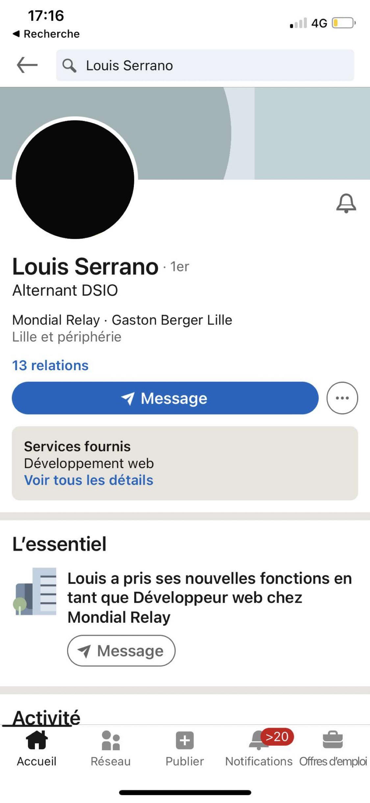
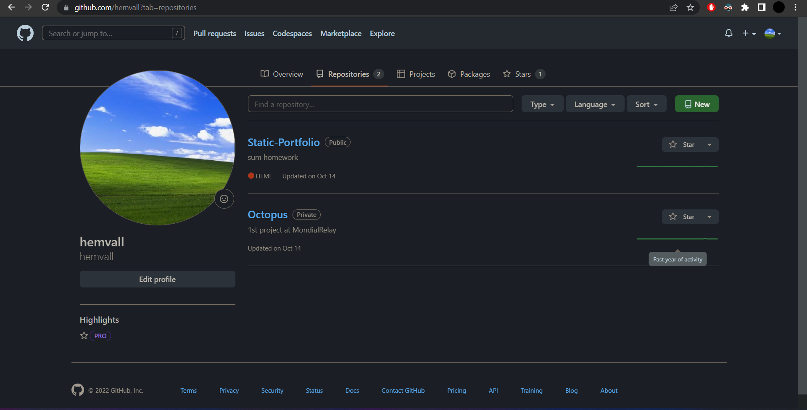
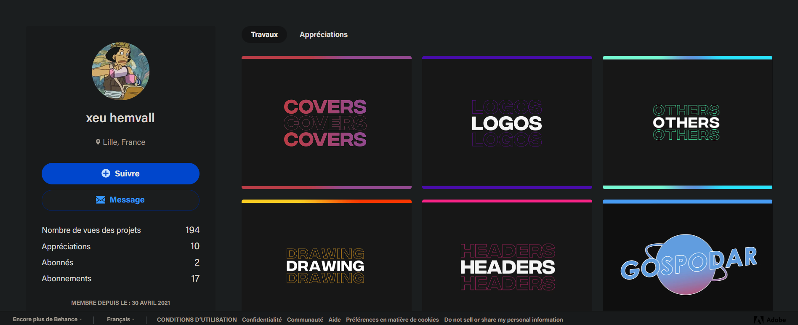

Behance
Gitlab
Louis Serrano
SIO Slam Alternance
Répondre aux incidents et aux demandes d’assistance et d’évolution
«
Gérer son identité professionnelle
▪ Création de mon compte LinkedIn où j'ai eu l'occasion d'ajouter les collègues de mon entreprise, des connaissances et les camarades du BTS.

▪ Mise en place de mon portfolio Développeur sur Github.
https://github.com/hemvall

▪ Mise en place de mon portfolio Graphiste pour du freelance à côté des cours.
https://www.behance.net/-hemvall/projects
